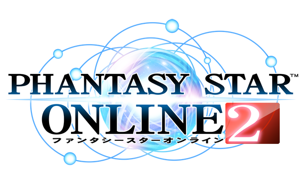

Game Updates
- New Endless Quest (March 6): Endless: Eternal Rondo
- KOF Legends AC Scratch
- Buster Quest reworks
Helpful Resources
My Other Sites
Contact
Email me if you have any questions or comments:
thatstraveling@gmail.comWhat is PSO2?
Phantasy Star Online 2 is one of many games within the Japanese based game franchise Phantasy Star. Phantasy Star started as a singleplayer Japanese role-playing game developed by SEGA for the Master System back in 1987. The JRPG series carried on through 3 more games until eventually a new adventure started in the year 2000, called Phantasy Star Online. It came out on the SEGA Dreamcast, and later on Xbox, GameCube, and Windows.
The most modern Phantasy Star game to come out before the ongoing PSO2, was called Phantasy Star Universe. It's North American release date was October 2006. It was the first major modern online game in the series. While it has a singleplayer story mode, it also was a popular MMO because it had multiplayer functionality, even on console versions. This made it widely accessible with the rise of the internet. PSU was the most similar experience to PSO2 today.
PSO2 is a fantasy science fiction MMORPG with fast paced action combat and a wide range of things to do in-game. It released originally in 2012, and has seen years worth of updates and changes. One change the western market has yet to seen in the past seven years, is a western release. The game has only been released in Japan. While they did have a South East Asia release, they no longer support it.
Gameplay
PSO2 has very unique gameplay systems that aren't easy to pick up right away. In fact, using outside references will probably be common place if you intend to pick this game up. You can find many helpful links on this site that may help you. The game does a pretty good job with it's brief tutorials, however they may not always be translated to English.
PSO2 features fast paced combat that is really unique to the MMO genre. The only competitor in Japan to it is Final Fantasy XIV, which has very traditional tab targeting with slow global cooldowns, similar to World of Warcraft. PSO2 combat is all about timing, efficiency, and reaction time. While PSO2 does feature a tab target mechanic, it's use is for keep your aim while you dodge and evade. Below is a video of an example of the Hero class during a boss fight.
The two main things to notice from this gameplay are evasion and timing. In this game it is important to always be on the move and to notice when an enemy is about to attack so you can time your dodge. While you are doing this, you should pay attention to dealing as much damage as possible during the times when it is safe to do so. This is pretty much the flow of the gameplay throughout.
Feel like playing?
PSO2 is fun, but it is a pain to get started. As mentioned before, it has only been released in Japan. While connecting to the JP servers isn't a problem outside of latency in-game, creating an account and translating the game to English is difficult.
Visit the Getting Started page for an explanation and walkthrough of the signing up and installation process.